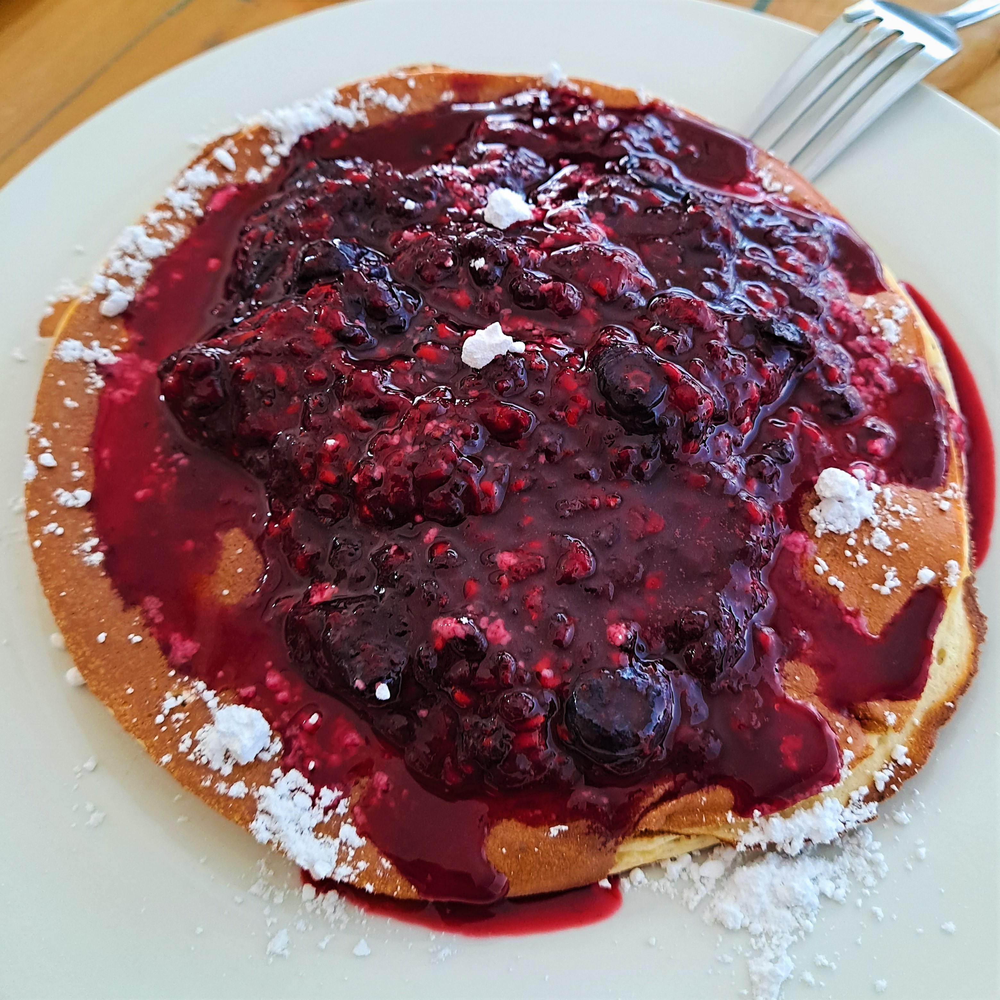

Pancakes BABY!

Ingredients Required
- 3 Egg whites
- 1 Whole egg
- 2 Medium bananas
- 1 Teaspoon baking powder
- Vanilla flavouring
- 1 Scoop vanilla protein powder
Preperation Method
- Seperate 3 egg whites (disposing of or saving the yolks)
- Place 3 egg whites plus 1 whole egg into blender
- Add 2 medium bananas to blender
- Add 1 scoop of protein powder (vanilla)
- Add a splash of vanilla flavouring
- Add 1 teaspoon baking powder
- Blend until mixture is smooth and to your desired consistency
- Pour batter into lightly greased non-stick pan on medium heat, cooking until bubble form on top of the pancake, flip and repeat
- Enjoy with suger-free maple syrup and Kenny's low cal protein ice cream